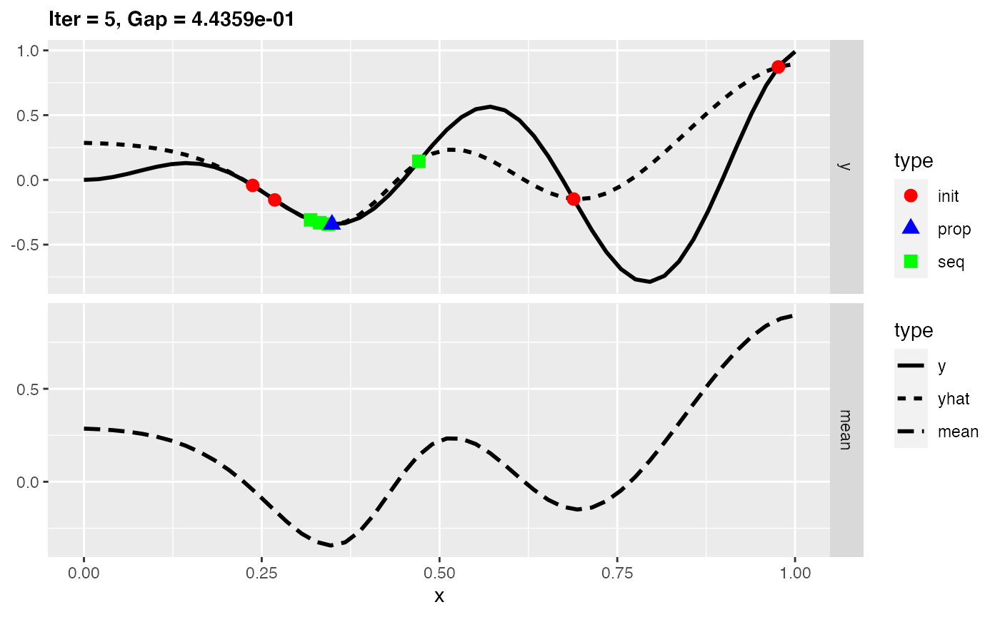
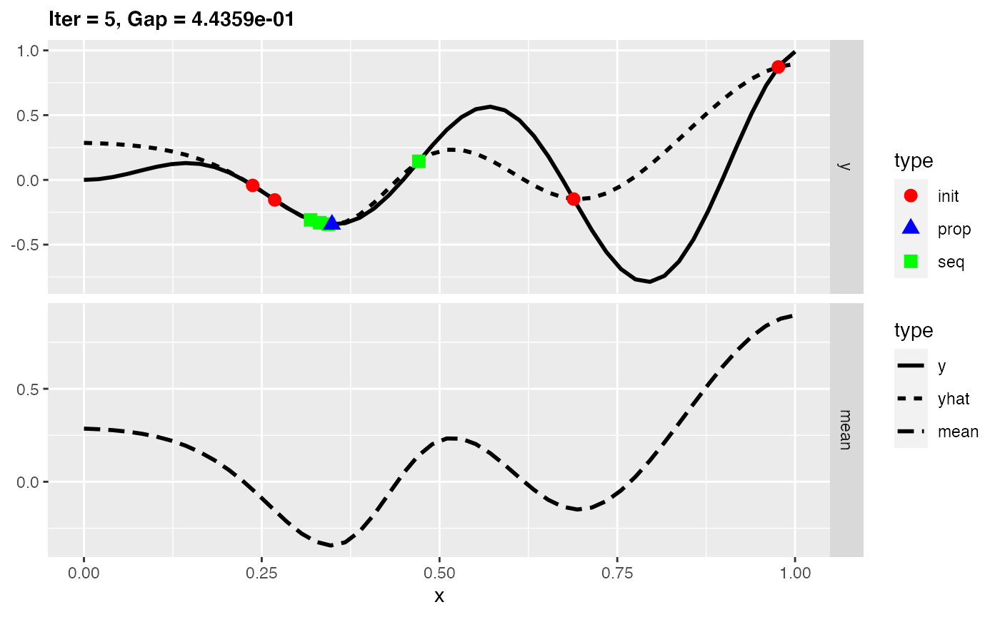
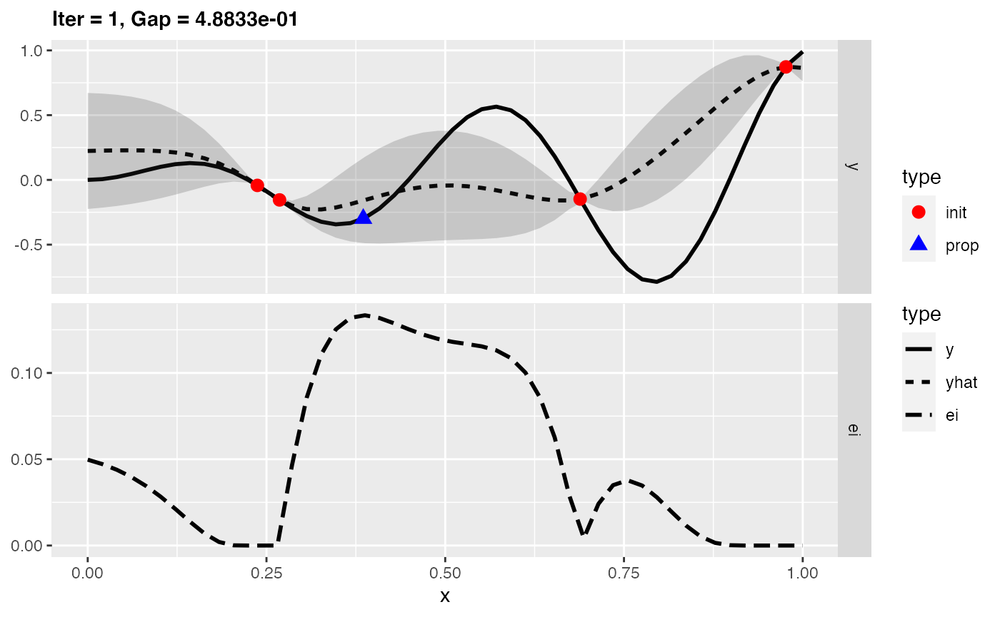
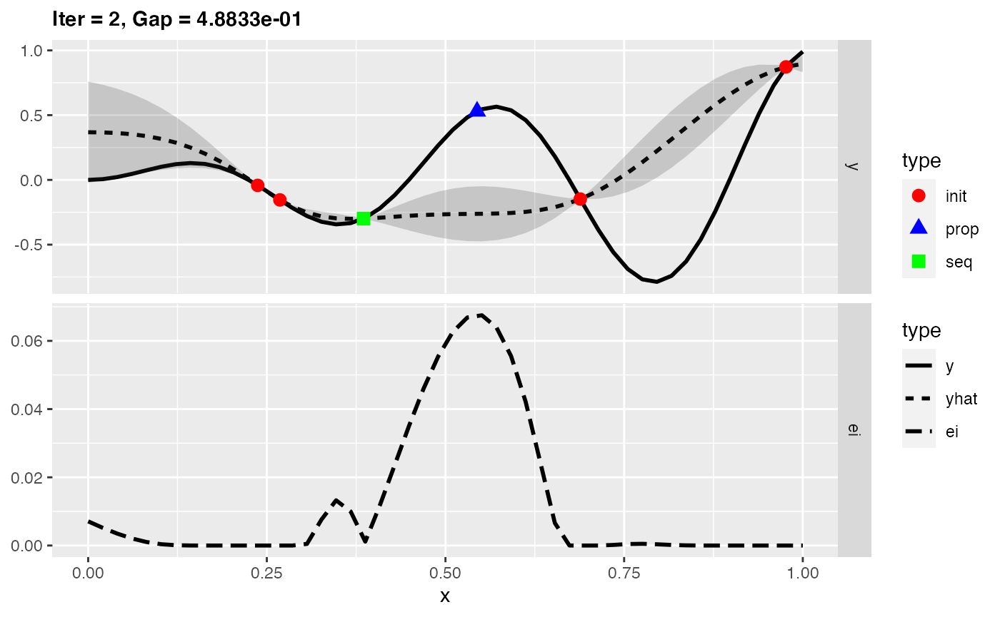
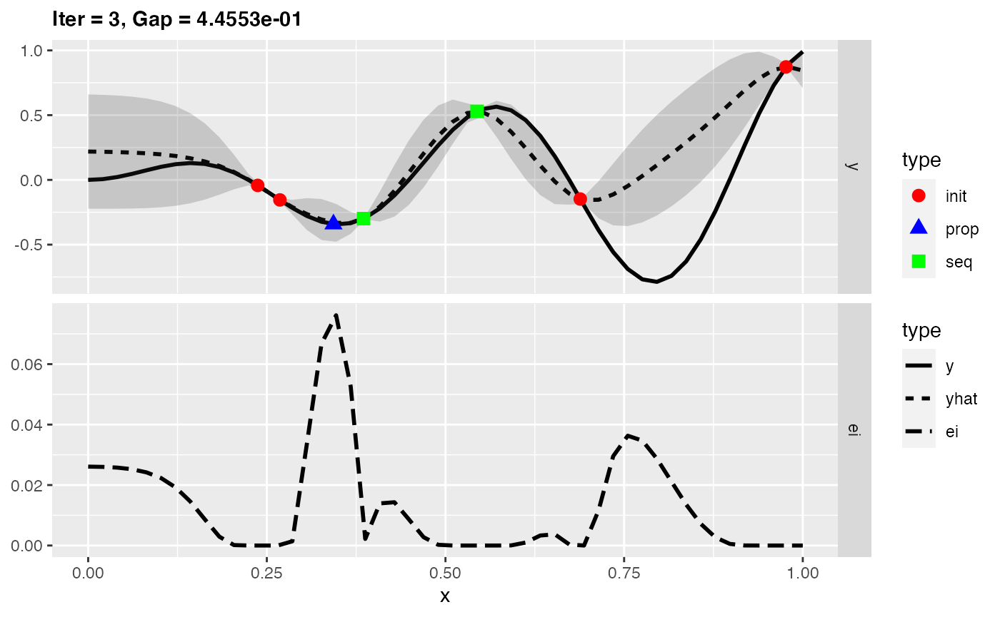
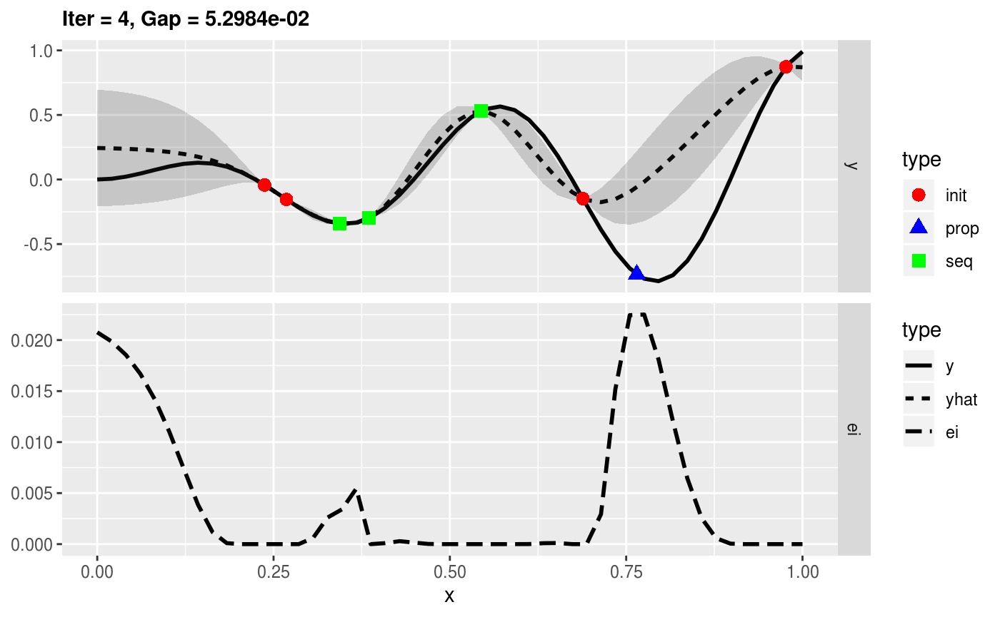
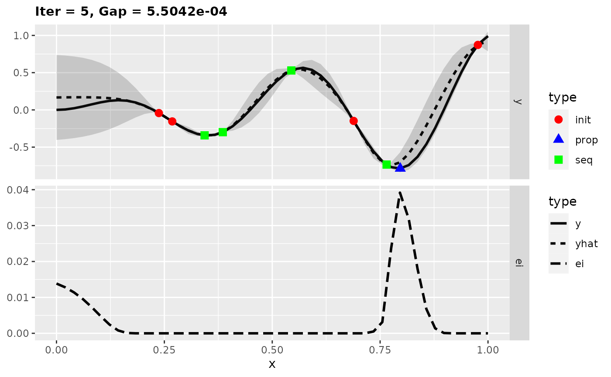

Purpose
This vignette gives a short example of the usage of the different infill criteria in mlrMBO. The infill criteria plays an important part for the optimization process in MBO as it is responsible for the proposals of new points at each iteration and thus steers the search.
Infill Criteria
In addition to the most often used Expected Improvement, there are also Confidence Bound, Augmented Expected Improvement, Expected Quantile Improvement, Direct indicator-based Search, the Mean Response and the use of Standard Error implemented. Most criteria take the mean and variance estimate of the surrogate model into account, so that the choice of infill criteria is connected to the choice of the surrogate regression method. It’s also possible to generate custom infill criteria. In the first step we show the general setting for the infill criteria in mlrMBO. In the second step we give two examples with the Expected Improvement and the mean response.
General setting for the infill criterion
To specify which infill criterion should be used, the MBOControl object has to be extended by calling setMBOControlInfill(). In addition to the criterion you can also set the parameters of the infill criterion optimization. The criterion itself is created with makeMBOInfillCrit*(). The most common infill criteria are predefined like crit.ei and crit.cb2. See ?MBOInfillCrit for details.
ctrl = makeMBOControl() ctrl = setMBOControlTermination(ctrl, iters = 5L) ctrl = setMBOControlInfill(ctrl, crit = makeMBOInfillCritEI())
For infill criteria that use the variance estimation of the surrogate model you need a learner that supports the variance estimate. For the common surrogate regression methods Kriging and Random Forest, the estimate is supported by setting predict.type = "se" in the learner object. For Random Forest there are different variance estimators, like the jackknife-after-bootstrap (the default) or the noisy bootstrap.
lrn.rf = makeLearner("regr.randomForest", predict.type = "se", se.method = "jackknife")
Examples
In the following two examples we want to minimize a simple one dimensional test function. First, we will use the mean response and second the Expected Improvement as infill criteria, while leaving the other settings the same.
Mean Response
Using the Mean Response as infill criterion leads to proposals of new points at the optimum of the estimated mean of the surrogate model. Hence, in case of minimization, it takes the point of the minimum of the surrogate model and in case of maximization it takes the point of the maximum. For this reason, the focus is on exploitation. It does not take the uncertainty of the surrogate model into account. Because of this, it can happen that only a local optima of the target function will be found. We will see that case in the following example.
In the first step we build a simple test function and generate an initial design:
test.fun = makeSingleObjectiveFunction( fn = function(x) x * sin(14 * x), par.set = makeNumericParamSet(lower = 0, upper = 1, len = 1L) ) set.seed(4) design = generateDesign(4L, getParamSet(test.fun), fun = lhs::maximinLHS)
In the next step we create a Kriging Learner to be used as the surrogate. Note that normally, we would set predict.type = "se" but as the mean as infill criterion does not take the variance estimate into account we do not have to.
lrn.km = makeLearner("regr.km")
Furthermore the control object for the MBO optimization has to be defined. Within setMBOControlInfill() we have to set crit = makeMBOInfillCritMeanResponse() to choose the mean response as infill criterion.
ctrl.mean = makeMBOControl() ctrl.mean = setMBOControlTermination(ctrl.mean, iters = 5L) ctrl.mean = setMBOControlInfill(ctrl.mean, crit = makeMBOInfillCritMeanResponse())
For the optimization run we use exampleRun() instead of mbo() in order to visualize it with plotExampleRun(). As we only want to look at the first and last iteration, we set iters = c(1L, 5L).
run.mean = exampleRun(test.fun, design = design, learner = lrn.km, control = ctrl.mean) plotExampleRun(run.mean, pause = FALSE, iters = c(1L, 5L))
 

In the figures the solid line shows the test function, the dashed line the estimated mean of the surrogate model, the red points the initial design points, green squares further design points and the blue triangles the proposed points. We see that new design points are only proposed at the local optimum. Indeed we are seeing here only five iterations, but the optimization also stagnates with more iterations at the local optimum. This is because new proposals are made always at the minimum of the surrogate model and thus there is no exploration anymore. Let’s try it next with an infill criterion that does exploitation as well as exploration.
Expected Improvement
The Expected Improvement takes the mean and uncertainty estimate of the surrogate model into account. Roughly speaking, at the design points you have the knowledge about the true values of the target function. The uncertainty is very low in this area. So you expect that you will not reach a large improvement if you search further in this part. Areas with large uncertainty are more interesting because there is a chance to get a larger improvement. However, it is also worth to consider the estimated mean because areas with low mean are more interesting. That’s why the Expected Improvement does both: exploitation and exploration.
We take the same test function as in the first example. Within the learner object we have to set predict.type = "se", because Expected Improvement requires the variance estimation.
lrn.km = makeLearner("regr.km", predict.type = "se")
Now we set crit = makeMBOInfillCritEI() within setMBOControlInfill().
ctrl.ei = makeMBOControl() ctrl.ei = setMBOControlTermination(ctrl.ei, iters = 5L) ctrl.ei = setMBOControlInfill(ctrl.ei, crit = makeMBOInfillCritEI())
Again we use exampleRun() instead of mbo to visualize the results.
run.ei = exampleRun(test.fun, design = design, learner = lrn.km, control = ctrl.ei) plotExampleRun(run.ei, pause = FALSE)

In the figures the uncertainty is displayed by the shaded area. The lower part of a plot shows the Expected Improvement. Now we found the global optimum of the test function in only five iterations.
This two examples show that exploration can be important to find the global optimum. If the learner supports the variance estimate, Expected Improvement or Confidence Bound is a good choice for the infill criterion.